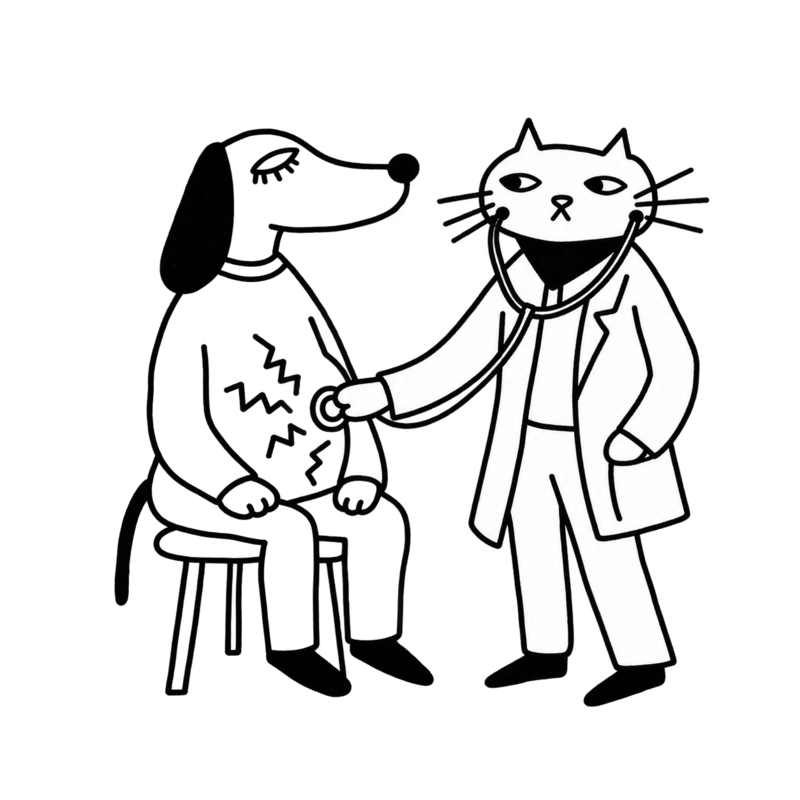
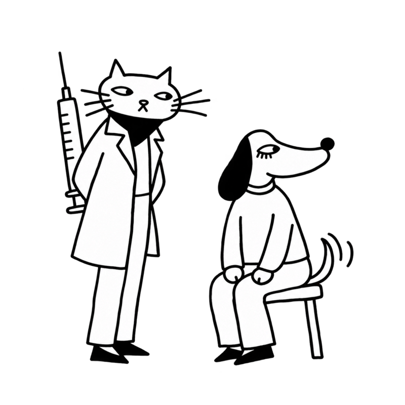
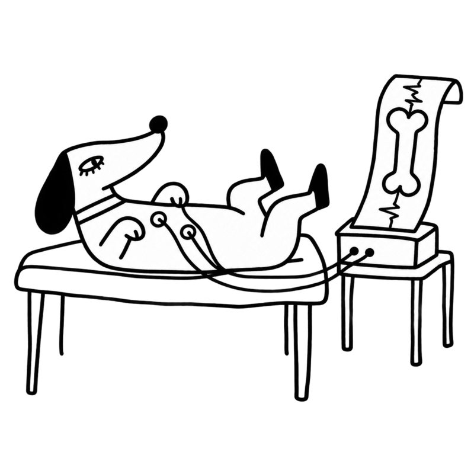
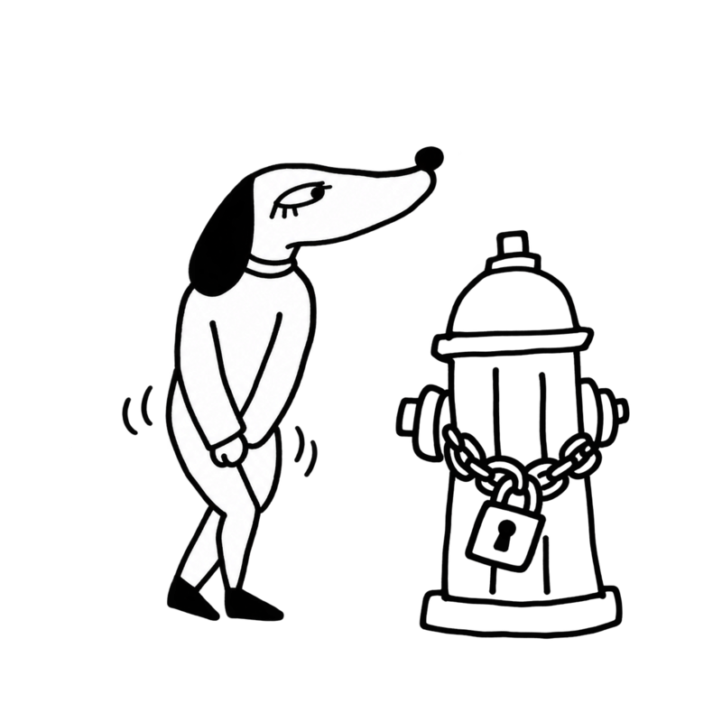
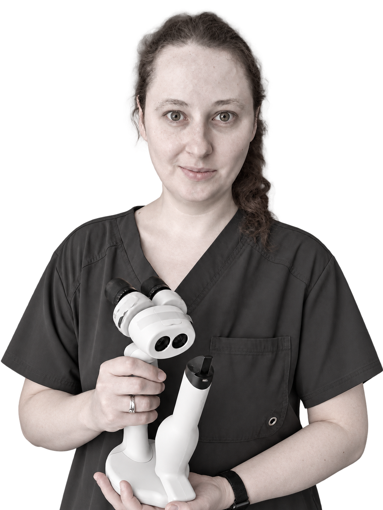
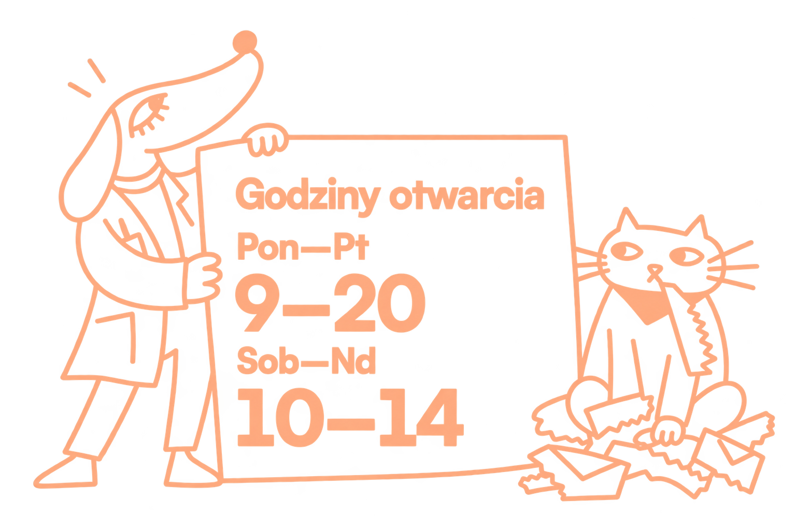

Choroby wewnętrzne
Zajmujemy się interną psów i kotów (gastroenterologia, endokrynologia, neurologia, choroby zakaźne itp.).

Cześć! Twój psyjaciel wolałby tu nie przychodzić. Rozumiemy. Poznaj założycielki, zespół, usługi i przychodnię. Sprawdź opinie i dojazd, umów wizytę i przygotuj się. Nagły przypadek? Tam nie żartujemy. Zwykłe cześć? Też odbieramy.


Chcemy, żebyście czuli się u nas swobodnie. Dbamy o zdrowie Waszych psów i kotów.
Chcemy, żebyście czuli się u nas swobodnie. Przyjmujemy psy i koty oraz pomagamy dbać o ich zdrowie.
Zajmujemy się interną psów i kotów (gastroenterologia, endokrynologia, neurologia, choroby zakaźne itp.).

Posiadamy nowoczesny sprzęt diagnostyczny na miejscu oraz współpracujemy z referencyjnymi laboratoriami zewnętrznymi.
Zapewniamy szczepienia oraz programy profilaktyczne.

Współpracujemy z doświadczonymi specjalistami w dziedzinie chirurgii tkanek miękkich.
Oferujemy badanie ECHO i EKG serca, wykonywane przez doświadczonego specjalistę kardiologa.

Oferujemy specjalistyczne badanie ultrasonograficzne.
Oferujemy kompleksową opiekę okulistyczną.
Niesiemy pomoc pacjentom cierpiącym z powodu różnych problemów skórnych.
Zapewniamy profilaktykę oraz leczenie chorób jamy ustnej.
Oferujemy pomoc pacjentom borykającym się z ostrymi i przewlekłymi chorobami nerek.
Diagnozujemy i rozwiązujemy problemy dolnych dróg moczowych.

Wykonujemy pomiar ciśnienia krwi metodą dopplerowską.
Wystawiamy paszporty, umożliwiając podróże zwierząt poza granice kraju.
Oferujemy usługę elektronicznego znakowania zwierząt z rejestracją w międzynarodowej bazie Safe Animal.
Dbamy o zdrowie
i dobre samopoczucie
Twojego pupila!

Tekst roboczy: tutaj opiszemy przestrzeń przychodni, przebieg wizyty i dostępne na miejscu wyposażenie.
Tekst roboczy: krótki opis poczekalni i organizacji wizyty z psem lub kotem.
Tekst roboczy: lista wyposażenia i badań, po potwierdzeniu jej przez zespół przychodni.
Tekst roboczy: opis tego, czego opiekun i zwierzę mogą spodziewać się w gabinecie.
Nieustannie podnosimy własne standardy, pogłębiając dla Was naszą wiedzę podczas licznych szkoleń i konferencji. Do każdego pacjenta podchodzimy indywidualnie i z zaangażowaniem, bo każda psyjacielska łapka jest równie ważna.



Wszystkie rekomendacje pochodzą z Google Maps . Średnia ocena w Google: 4,8 na podstawie 92 opinii (stan zweryfikowany 6.10.2026).
Przemiła atmosfera i profesjonalna pomoc. Panie Doktor Ostrowska i Podkowa mają lata doświadczenia, a przede wszystkim najaktualniejszą wiedzę, dzięki temu udało się pomóc mojemu psiakowi. Odwiedzaliśmy inne lecznice i dopiero tutaj udało się właściwie zdiagnozować, znaleźć przyczynę i podjąć właściwe leczenie. Szczerze polecam. Będziemy wracać!
Doktor Magda Ostrowska to fantastyczna weterynarka- z ogromną wiedzą, bardzo zaangażowana, wnikliwa i z sercem na dłoni. Opiekowała się moimi kotami przez lata, dzieki jej starannej opiece oraz pomysłom na leczenie, moja kotka z niewydolnością nerek żyła kilka lat więcej niż wskazywały początkowe diagnozy u innych weterynarzy. Ogromnie polecam dla wszystkich kociarzy i psiarzy.
„Przegląd” i rutynowe zabiegi na wysokim poziomie. Bardzo sympatyczna pani weterynarz Aleksandra Podkowa, czuć zaangażowanie w wykonywaną pracę, doskonałe podejście do sierściatego pacjenta. Gorąco polecam.
Miejsce nowe, ale jakby już znane. Wszystko za sprawą bardzo przyjemnych Doktor, które opieką okrywają nie tylko czworonożnych pupili, ale i ich właścicieli. Wrócimy!
Z Panią dr Magdą Ostrowską znamy się od lat. Prowadzi i prowadziła wszystkie nasze zwierzaki. Doświadczona, profesjonalna, opiekuńcza i empatyczna. Z całego serca polecamy lecznicę Psyjaciele!
Pełen profesjonalizm. Pani Ola z sercem i ogromnym zaangażowaniem zajęła się moją pociechą. To nie nasze pierwsze spotkanie ale i nie ostatnie. Na pewno wrócimy! Polecam całym serduszkiem.
W godzinach pracy przychodni przyjmujemy pilne przypadki — prosimy o kontakt telefoniczny.
Zadzwoń: 537 821 345Powiedz, co się stało, kiedy zaczęły się objawy i czy pupil oddycha oraz reaguje. Postępuj zgodnie z instrukcjami lekarza.
Duszność, utrata przytomności, silne krwawienie, potrącenie lub podejrzenie zatrucia wymagają pilnej pomocy. Poproś drugą osobę o telefon, gdy przygotowujesz transport.
Odsuń zagrożenia i ogranicz hałas. Zwierzę w bólu może ugryźć. Podczas drgawek nie przytrzymuj go i nie wkładaj nic do pyska.
Nie podawaj leków ani nie wywołuj wymiotów bez zalecenia lekarza. Przy podejrzeniu zatrucia zabierz opakowanie substancji lub jej zdjęcie.
Jeśli jest widoczna krwawiąca rana i możesz bezpiecznie pomóc, uciskaj ją czystym ręcznikiem lub gazą. Nie wyciągaj przedmiotów tkwiących w ranie.
Ogranicz ruch: użyj transportera, a po urazie ostrożnie przenieś zwierzę na kocu. Nie uciskaj szyi ani klatki piersiowej. Jedź do lecznicy, z którą ustalono przyjęcie.
Pierwsza pomoc nie zastępuje leczenia weterynaryjnego. Wskazówki: Royal Veterinary College i AVMA.
Skontaktuj się z jedną z lecznic całodobowych. Przed wyjazdem zadzwoń i opisz stan pupila.
Pomoc całodobowa · 24/7
ul. Trakt Lubelski 391
04-667 Warszawa
Pomoc całodobowa · 24/7
ul. Korkowa 103
04-519 Warszawa
Ostry dyżur całodobowy.
Recepcja: 8–21.
ul. Jurija Gagarina 5
00-753 Warszawa
Dane kontaktowe i dyżury sprawdzone na stronach lecznic: 6.10.2026.
Kilka prostych przygotowań pomoże nam poznać Twojego psyjaciela i sprawniej przeprowadzić wizytę.
Zabierz książeczkę zdrowia lub paszport oraz dokumentację z wcześniejszych wizyt.
Przygotuj dotychczasowe wyniki badań i wypisy z innych lecznic. Mogą być też zapisane w telefonie.
Zapisz nazwy podawanych leków i suplementów, ich dawki oraz godziny podawania.
Spisz, co Cię niepokoi i od kiedy. Jeśli zachowanie trudno pokazać w gabinecie, zabierz krótkie nagranie.
Psa przyprowadź na smyczy, a kota w zamkniętym transporterze. Zabierz znajomy kocyk, który pomoże psyjacielowi poczuć się swobodniej.
Przyjdź kilka minut wcześniej. Jeśli Twój psyjaciel obawia się wizyt lub innych zwierząt, powiedz nam o tym przy rezerwacji.
ul. Celownicza 4 lok. U-3
04-175 Warszawa, Gocław
Wejście od tyłu budynku przy ul. Celowniczej 4.
Przystanek: Zajezdnia Ostrobramska.
Tekst roboczy: miejsce na krótki opis trasy od przystanku.
Tekst roboczy: miejsce na potwierdzone informacje o parkowaniu i dostępności wejścia.
Jeśli masz jakieś pytania lub po prostu chcesz powiedzieć cześć, nie wahaj się z nami skontaktować. Odpowiemy wkrótce.

Przychodnia weterynaryjna Psyjaciele
ul. Celownicza 4 lok. U-3
04-175 Warszawa
Wejście od tyłu budynku przy ul. Celowniczej 4.
Przystanek: Zajezdnia Ostrobramska.
Google Maps
+48 537 821 345
kontakt@psyjacielevet.pl
Pilne przypadki przyjmujemy w godzinach pracy przychodni — prosimy o kontakt telefoniczny.
Poza godzinami pracy skontaktuj się z lecznicą całodobową.
Zadzwoń pod 537 821 345 lub napisz na kontakt@psyjacielevet.pl. Podaj, jakiej usługi potrzebuje Twój pies lub kot. Zakres i koszt ustalimy indywidualnie.